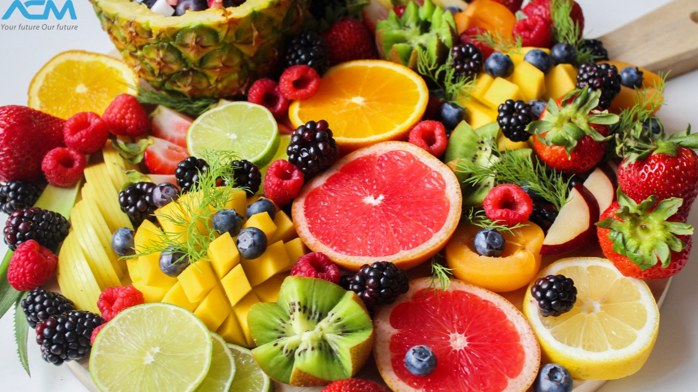
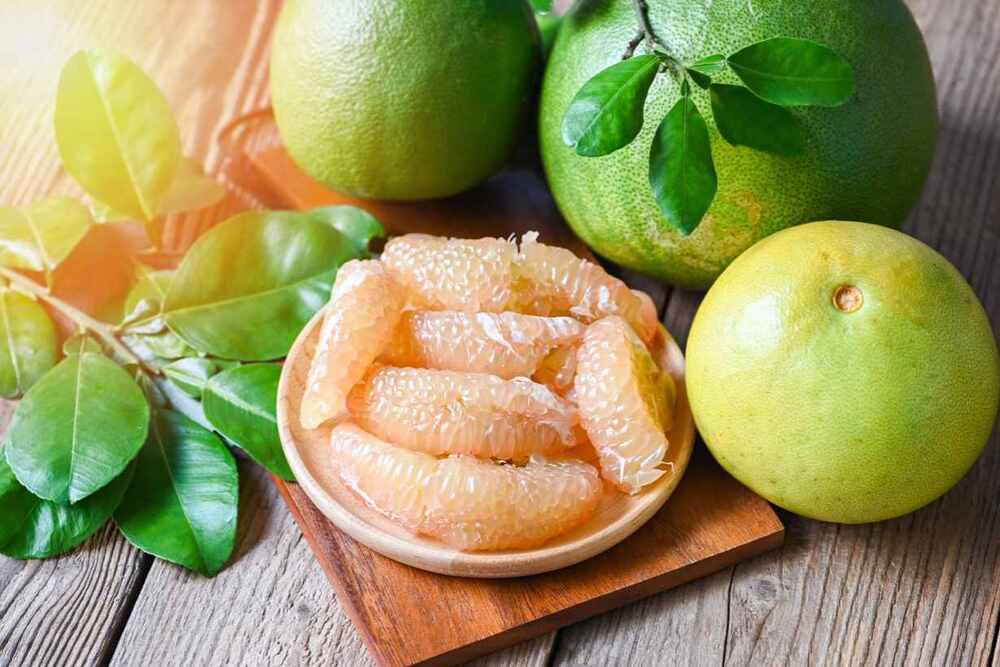
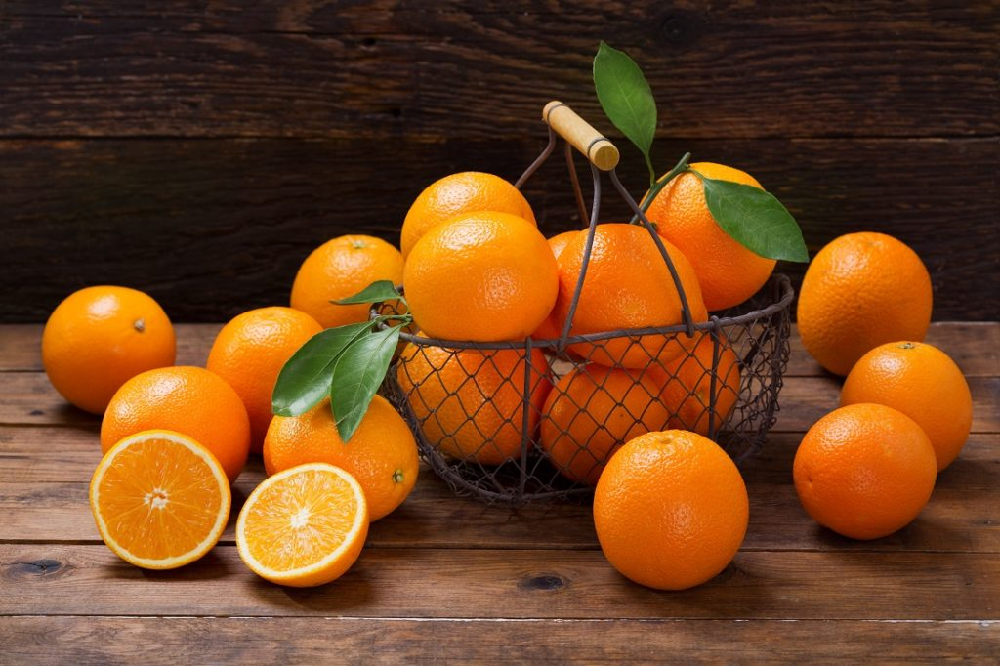
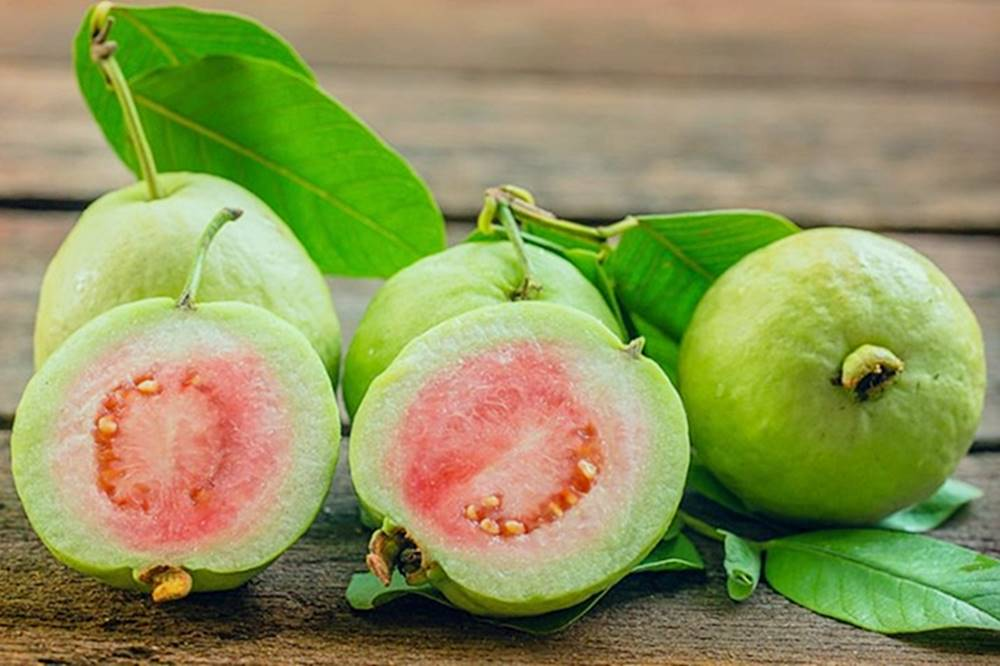

Táo là một loại quả hầu như có quanh năm, trái cây này có rất nhiều tác dụng như phòng chống ung thư, tốt cho hệ tiêu hoá, cho xương, ngăn ngừa nguy cơ mắc các bệnh về đường hô hấp….Trong táo còn có chứa vitamin A, E, B1, B2, B6 và chất chống oxy hóa tốt cho sức khỏe.
Ngoài ra, ăn táo còn giúp đẹp da và giảm cân. Vì vậy đây là loại quả ưu tiên số 1 đối với các chị em phụ nữ.
Bưởi là trái cây chứa nhiều vitamin có lợi cho sức khỏe. Đây là loại quả không chỉ bổ dưỡng cơ thể mà còn là một vị thuốc quý.
Bưởi bổ sung vitamin C làm tăng sức đề kháng của cơ thể, chống oxy hóa, giảm stress, các bệnh liên quan với hen suyễn và viêm khớp. Với lượng vitamin A, vitamin C cao, bưởi giúp duy trì đủ độ ẩm trong da, bảo vệ da khỏi bị khô, bệnh vảy nến, mụn trứng cá và nếp nhăn.

Nếu bạn vẫn đang thắc mắc tháng 1 có quả gì ngon thì cam là một vài gợi ý dành cho bạn. Một quả cam cung cấp cho cơ thể 130% nhu cầu vitamin C trong ngày, 2% nhu cầu vitamin A, 6% canxi và 0% chất sắt.
Cam được biết đến là một loại quả có nhiều công dụng tuyệt vời cho sức khỏe nhưng điển hình nhất là giúp duy trì huyết áp ổn định và giảm nguy cơ đột quỵ.
Theo đó số lượng người bị đột quỵ do thiếu máu cục bộ vì ăn ít cam cao hơn đến 19% so với những người ăn cam thường xuyên.

Mãng cầu ta có thể hỗ trợ dạ dày tiêu hóa tốt hơn nhờ vào thành phần chất xơ có trong chúng. Ngoài ra, chúng còn giúp loại bỏ những độc tố thừa thải từ ruột, làm giảm nguy cơ mắc chứng táo bón, viêm dạ dày, ợ nóng, đau dạ dày,…
Ở Hà Nội có tới 2 mùa mận là mùa mận xanh và mùa mận chín. Nhưng nếu như mận hậu phải tới tận tháng 5,6 mới vào chính vụ thì ngay từ cuối tháng 2 nhiều người Hà thành đã phát cuồng vì những gánh hàng rong bán mận xanh trên phố.
Tuy nhiên vì là đầu mùa nên giá mận xanh khá đắt đỏ và rất có khả năng những người bán hàng vì lợi nhuận mà phun chất kích thích để bán được giá. Vì vậy khi chọn mua mận trong tháng 2 này, bạn nên chọn mua ở những địa chỉ uy tín, có xuất xứ rõ ràng và đừng quên ngâm nước muối thật kỹ và rửa sạch trước khi ăn nhé.
Xoài xanh là một trong những loại quả được nhiều chị em săn lùng. Xoài xanh chua chua, rôn rốt chắc chắn là loại trái cây tháng 2 được nhiều người yêu thích, tìm kiếm. Xoài xanh được bán nhiều những ngày cuối tháng 2. Bởi sang đến tháng 4,5 xoài sẽ chín vàng và mềm thơm.
Những quả xoài xanh có mùi thơm, thịt quả dày, màu thịt vàng hoặc trắng. Khi ăn rất giòn nên dễ ăn và mê hoặc mọi đối tượng.

Vú sữa là một loại quả hấp dẫn với hương thơm và vị hoàn hảo không thể bỏ qua. Vú sữa được thu hoạch vào những ngày đầu tháng 3. Quả vú sữa trắng, hồng, mòng mọng trông thật ngon mắt và hấp dẫn. Lớp thịt quả mềm, khi ăn có vị thơm mát, ngọt thanh rất thích hợp để mua làm quà biếu hoặc mua để ăn.
Không chỉ ghi điểm bởi hương vị khó quên, trái vú sữa còn “tiềm ẩn” một hàm lượng khoáng chất vô cùng ấn tượng, bao gồm: vitamin B1, B3, C, protein, photpho, lysin, tryptophan,… đặc biệt là có chứa thành phần axit malic, chất này có tác dụng phòng ngừa bệnh nám da và kháng khuẩn.
Ngoài ra vú sữa còn có khả năng cải thiện sức khỏe hiệu quả, tốt cho hệ tiêu hóa, tăng cường miễn dịch, ngăn ngừa bệnh thiếu máu, hỗ trợ giảm cân,…

Đu đủ lúc chín có vị ngọt rất thanh, kèm theo mùi hương hấp dẫn nên cực kỳ gây nghiện. Cùng với mùi vị tuyệt vời, quả đu đủ còn sở hữu giá trị dinh dưỡng cao, bổ sung đu đủ vào chế độ ăn uống hàng ngày rất tốt cho hoạt động của các cơ quan trong cơ thể, đặc biệt là tim mạch và hệ tiêu hóa.
Ngoài ra, loại quả này còn có khả năng ngăn chặn và đẩy lùi sự hình thành của các tế bào ung thư, bổ mắt và tăng kích thước vòng 1 ở nữ giới. Đó cũng chính là lý do mà mỗi khi đứng trước thắc mắc “tháng 3 là mùa trái cây gì”, người ta sẽ không thể nào "làm lơ" được trước sức hút khó chối từ của đu đủ.

Ổi là loại trái cây đặc trưng với giá trị dinh dưỡng cao, ít chất béo bão hoà, cholesterol và natri, chứa nhiều chất xơ, vitamin C, A, kẽm, kali và mangan giúp bảo vệ và tăng sức đề kháng, bảo vệ sức khỏe, làm đẹp da và ngăn ngừa được các bệnh ung thư cũng như hỗ trợ tiêu hóa cực kỳ tốt. Đặc biệt uống nước ép ổi hằng ngày tốt cho người suy nhược cơ thể.
Một điểm mà rất ít người biết được đó là ổi chứa nhiều vitamin C hơn so với Cam, quýt.
